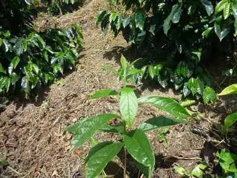

pranet · 出典付きの植物図鑑
Spanish elm
Cordia alliodora (Ruiz & Pav.) Oken · Cordiaceae

Cordia alliodora is a species of flowering tree in the family Cordiaceae, that is native to the American tropics. It is commonly known as Spanish elm, Ecuador laurel, cypre or salmwood. It can reach 35 m in height.
出典: Wikipedia (en): Cordia alliodora · CC BY-SA 4.0
異名: Cerdana alliodora Ruiz & Pav., Cerdana cujabensis Manso ex DC., Cordia andina Chodat, Cordia cerdana Roem. & Schult., Cordia cujabensis Silva Manso & Lhotsky ex Cham., Cordia goudotii Chodat, Cordia velutina Mart., Gerascanthus alliodorus (Ruiz & Pav.) M.Kuhlm. & Mattos, Gerascanthus cujabensis (Manso & Lhotsky ex Cham.) Borhidi, Gerascanthus velutina Fresen., Gerascanthus velutinus Fresen., Lithocardium alliodorum (Ruiz & Pav.) Kuntze, Lithocardium cujabense (Silva Manso & Lhotzky ex Cham.) Kuntze, Varronia rusbyi (Rusby) Borhidi, Varronia tuberosa Sessé & Moc.
同定や利用は自己責任でお願いします。この図鑑だけを根拠に野生の植物を食べないでください。
出典
- 学名: World Flora Online Plant List 2026-06 · CC0 1.0
- 名前: Wikipedia の記事名と Wikidata · CC0 1.0（Wikidata）。記事名は事実
- 説明: Wikipedia (en): Cordia alliodora · CC BY-SA 4.0
- 食用・毒性: World Checklist of Useful Plant Species (Diazgranados et al. 2020, RBG Kew) · CC BY 4.0
- 分布: World Checklist of Vascular Plants (WCVP), RBG Kew, version 2026-06-04 · CC BY 3.0
このページは pranet のデータから自動生成しています。コードは MIT、データは項目ごとのライセンス（説明）。